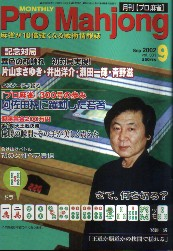

北海道で天王戦という優勝賞金２００万円というプロアマ混合の大会が行われた。その経緯が今月号のプロ麻雀に、主催者でもあり出場選手でもある土田浩翔プロの観戦記の形で載っている。それがなんとも（@_@）な内容。。。。

観戦記によれば、プロアマ混合戦でプロ４人だけが勝ち残り、そのプロ４人で決勝戦が行われるというのが理想の姿であったとか。そこでたとえ短期決戦であっても、それが実現するように、プロ必勝システムともいうべき大会方式をとったという。
すなわち一般参加者は準々決勝に顔を出するまでに、予選で１２ゲームを勝ち抜いてこなければならないが、Ａシードとされた８人のプロは、いきなり準々決勝から参加する。つまりＡシード選手は準々決勝と準決勝の２回だけ勝ち抜けば決勝戦に進出できるというシステム。
Ａシード選手のほか、さらに８人くらいのプロがＢシードとして出場しているが、彼らも準々決勝から参加したのか、あるいはその一つ前の段階から出場したのかよく判らない。しかしシードと云う以上、いずれにしてもその辺りからの出場したと思われる。
この「シード制、同メンバーで半荘３回、上位２名が次の段階に進む」というトーナメント方式は、「プロに勝ってくださいと云わんばかりのシステム」で、スポンサー側から、「これで負けたら言い訳できないね」という声も出たという。
なんか200万円もの優勝賞金がかかっているのに、そんな不公平なシステムが許されるのかなんて気がしないでもない。しかし一般参加者からはそんなクレームの声もあがらなかったようだ。そこで無事大会は進み、やがてプロが大量にシードで出場する準々決勝を迎えた。
ところが準々決勝の段階で過半数のプロが脱落。準決勝でほとんど脱落。結局決勝戦にはたった１人のプロしか進出できなかった。そしてアマ３人とプロ１人の決勝戦でアマがワンツーフィニッシュ、プロは３位だったという。
麻雀だから短期勝負では実力通りの結果が出るとは限らない、とは云うものの、そうならないように考えた末の結果がこれでは、あまりにも皮肉である。
このタイトル戦は来年以降も続けられるらしい。しかしいかに短期勝負では実力通りの結果が出るとは限らないと云ったところで、これほどの優遇システムを取られたグループから優勝者が出ても、不思議でもなんでもない。というより出ても当たり前。
来年、どこかのプロがこんなシステムで優勝したところで、「さすがはプロ」とはとても思いにくい。みんな横一線でスタートして、毎回のようにプロが勝ち抜いて優勝、あるいは多くのプロが好成績を収めてこそ、「さすがはプロ」ということじゃないのかしらん。
|